Локации
В процессе исследования Мира Снов Омори, игрок посещает самые различные локации. У каждой есть свои специфичные характеристики: враги, квесты, персонажи, получаемые предметы. Порядок локаций в списке ниже соответствует порядку прохождения их в игре.

- нет
- Плюшевая игрушка Обри
- 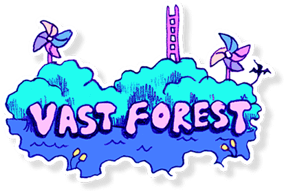
- Дом Бейзила
- Игровая Площадка
- Лес Вертушек
- Ж/д Станция
- Потерявшийся мячик Берли
- Диллема Дейзи
- Убийца кроликов
- Слабый ветер
- Пустой дом
- 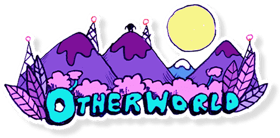
- Свалка
- Поле Камышей
- Колония Росткокротов
- Замерзшее Озеро
- Переработка
- Странная просьба
- Пропажа Даки младшего
- Палка в земле
- Капитан космических пиратов
- 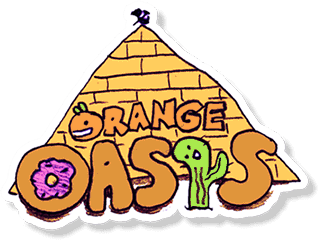
- Раскопки Дино
- Городок Дождя
- Хлебеса
- Чесотка
- Поверните
- Гектор
- Подарок для Палми
- Поиск Апельсина Джо
- 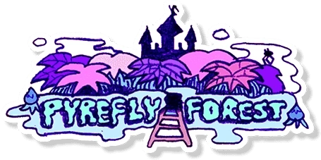
- Деревня Росткокротов
- Замок Лапочки
- Затерянная Библиотека
- Плакучая ива
- Увлекательная литература
- Хороший слушатель
- 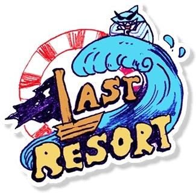
- Кабинет Крутозуба
- Стройплощадка
- Вечеринка Призраков
- Потерявшиеся друзья
- Вечеринка призраков
- Зов вдохновения
- 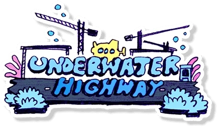
- Последний шанс
- Глубочайший колодец
- Хамфри
- Украденные гребешки
- Кальмаги
СОСЕДСКАЯ КОМНАТА стала местом, где Омори впервые встречает своих друзей, как показано в одной из катсцен. Здесь группа проводит время за игрой в карты в ожидании Омори, отсюда отправляется на приключения в Мир Снов. Локация во многом вдохновлена домиком на дереве, который Санни с друзьями использовали для игр до смерти Мари.

Подлокации:
Квесты:
БЕСКРАЙНИЙ ЛЕС выглядит как обширная территория, поросшая бледно-зелёной травой и невысокими толстыми деревьями с более тёмной листвой. Эта локация является перекрестком между всеми остальными. В её центре располагаются выход из СОСЕДСКОЙ КОМНАТЫ и Игровая Площадка, выполняющая роль лобби.
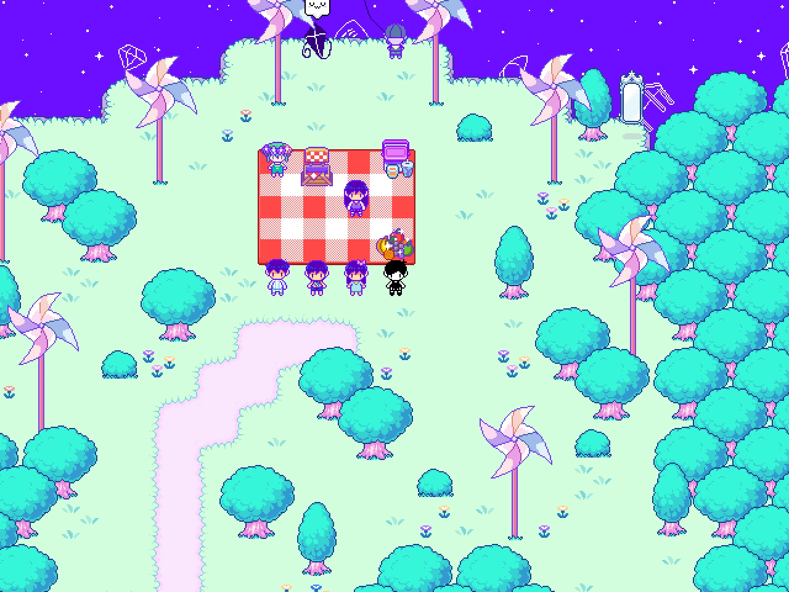Подлокации:
Квесты:
ВНЕЗЕМЕЛЬЕ - это неофициальная остановка для усталых космических туристов и популярное место для семейного кемпинга. Здесь можно встретить самых разнообразных персонажей: семью утко-кроликов, ТВ-девочку с экраном вместо лица и даже сбежавший Плутон, занятый в бизнесе грузоперевозок. Но самая важная личность здесь - капитан космических пиратов Космо Бойфренд, тяжело переживающий разбитое сердце.
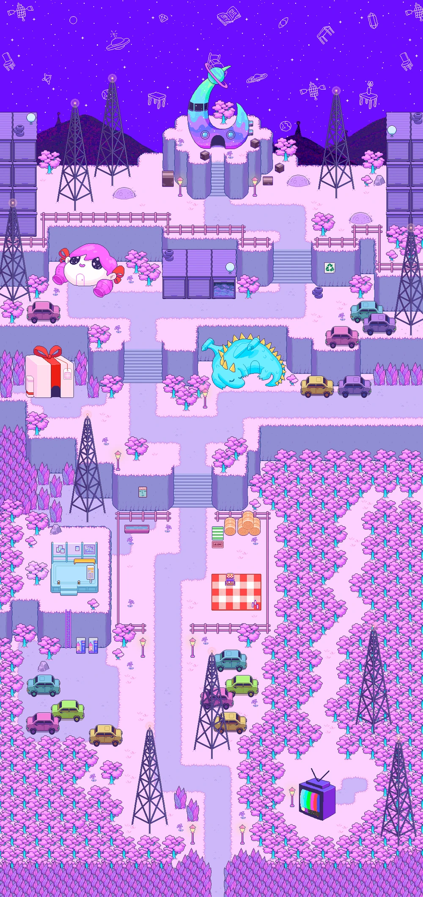Подлокации:
Квесты:
АПЕЛЬСИНОВЫЙ ОАЗИС - необязательная локация, открывающаяся для посещения после прохождения ВНЕЗЕМЕЛЬЯ. АПЕЛЬСИНОВЫЙ ОАЗИС - местный курорт. Вместо песка - сахар, вместо воды - апельсиновый сок, в каждой лавке продают сладости, а самое популярное развлечение здесь - Раскопки Дино, возможность попытать свою удачу в поиске сокровищ.
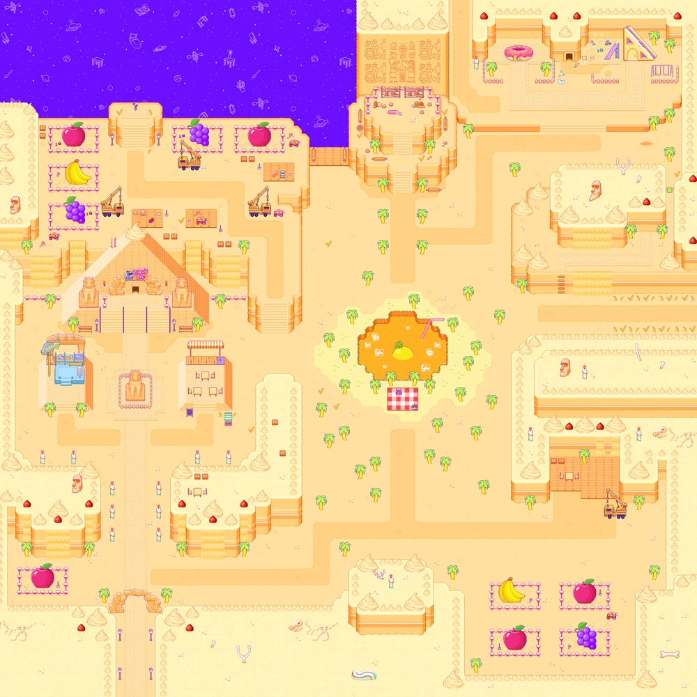Подлокации:
Квесты:
ЛЕС СВЕТЛЯЧКОВ - огромный, густой лес, ответвление от БЕСКРАЙНЕГО ЛЕСА. В сравнении, ЛЕС СВЕТЛЯЧКОВ более густой, тёмный, таинственный. Трава в нём темнее, деревья с виду похожи на огромные пышные кусты с цветами оранжевого, розового и фиолетового цветов. Он полон опасных пауков и насекомых. В центре леса находятся Замок Лапочки, самопровозглашенной принцессы Росткокротов.

Подлокации:
Квесты:
ПОСЛЕДНИЙ ШАНС - это убыточный отель-казино, которое управляется бизнесменом Мистером Крутозубом и охраняется его подчиненными Крокодиллерами. Сюда Омори приходит в очередном сне в поисках пропавших друзей. Тогда он узнает, что все они подписали бессрочные неоплачиваемые трудовые договоры, и уволить их, чтобы вернуться к приключениям. В этом месте игрок то и дело будет терять заработанные внутриигровые деньги, то проигрывая их в автоматах, то тратя на неоправданно дорогие продукты.
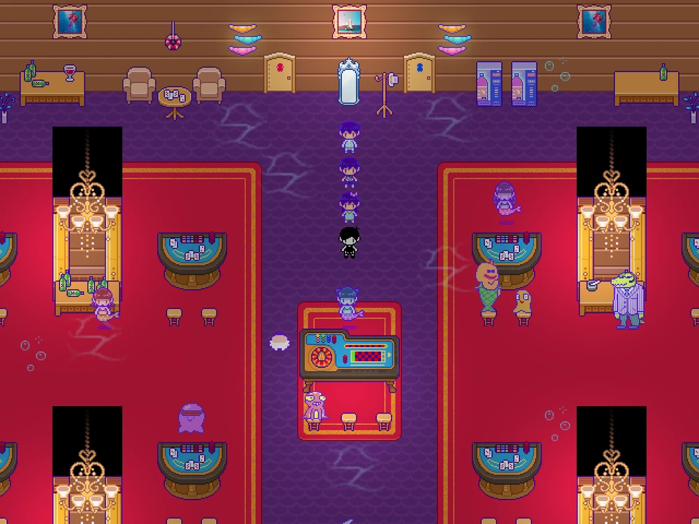Подлокации:
Квесты:
ПОДВОДНОЕ ШОССЕ - последняя локация перед началом разрушения мира снов
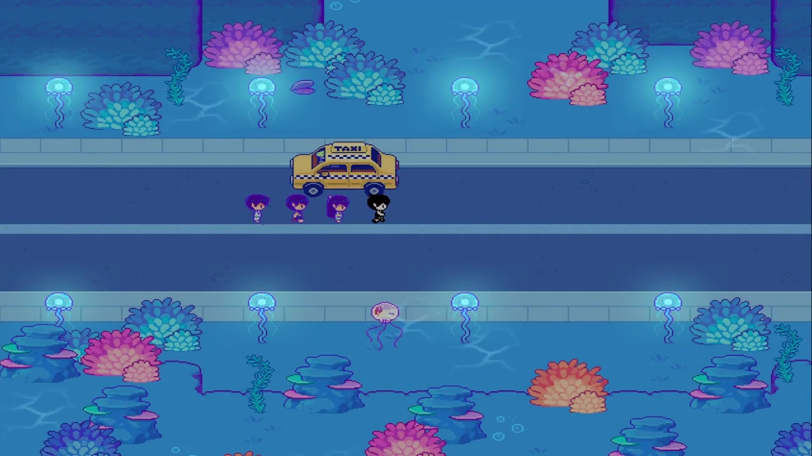